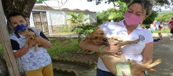
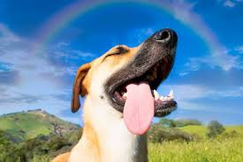
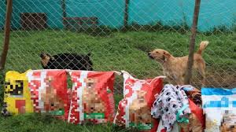

Adopta
Dale un hogar a un animal que te necesita. Tenemos perros, gatos y más esperando por ti.
Ver animalesFundación de Rescate Animal
En Patitas Felices rescatamos, cuidamos y encontramos hogares amorosos para animales que más lo necesitan.

Nuestros voluntarios en acción
Jornadas de adopción cada mes

Más de 200 animales rescatados

Atención veterinaria gratuita
Hay muchas formas de hacer parte del cambio
Dale un hogar a un animal que te necesita. Tenemos perros, gatos y más esperando por ti.
Ver animalesTu aporte nos ayuda a cubrir alimentación, veterinaria y refugio para nuestros animales.
Donar ahoraDedica unas horas de tu tiempo. Necesitamos manos amorosas todos los fines de semana.
Unirme¿Tienes preguntas? ¿Encontraste un animal en situación de calle? Escríbenos.
ContactarRescatar, rehabilitar y reubicar animales en situación de abandono o maltrato, promoviendo una cultura de respeto y responsabilidad animal en toda la comunidad. Brindamos atención veterinaria, alimentación y amor a cada animal que llega a nuestro refugio.
Ser la fundación líder en bienestar animal en Colombia, logrando un futuro donde ningún animal sufra abandono ni maltrato. Construimos comunidades conscientes donde cada ser vivo es valorado y protegido.
Rescates, adopciones y mucho amor





Estos peluditos esperan un hogar como el tuyo
 Disponible
Disponible
 Disponible
Disponible
 Adoptado ✓
Adoptado ✓
Leal y protector. Ya encontró su hogar eterno.
 Disponible
Disponible

Adoptar a Milo fue la mejor decisión de nuestra familia. El proceso fue muy fácil y el equipo nos acompañó en todo."

"Soy voluntaria hace 2 años y ha cambiado mi vida. Ver a los animales recuperarse y encontrar familia no tiene precio."

"Encontramos a Bella en muy mal estado. Gracias a Patitas Felices hoy es una perrita sana y llena de amor."
Con tu donación cubrimos alimentación, medicina veterinaria y el mantenimiento de nuestro refugio.
Necesitamos voluntarios cada fin de semana
Ayuda con el aseo y cuidado diario de los animales.
Lleva animales a citas veterinarias y eventos.
Toma fotos para las publicaciones de adopción.
Comparte en redes y ayuda con comunicaciones.